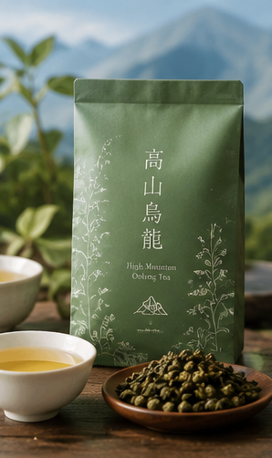
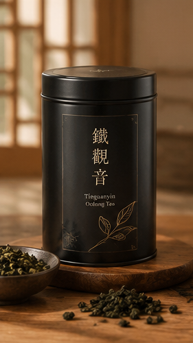
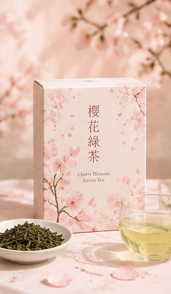
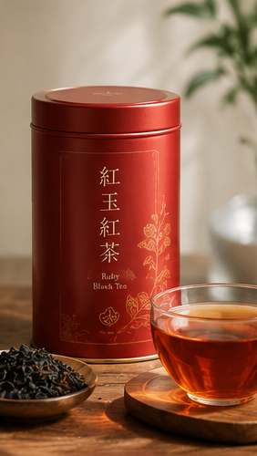
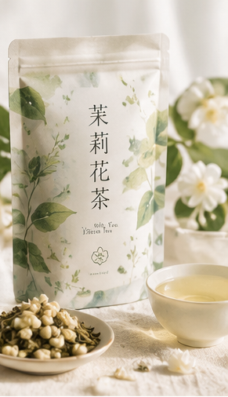
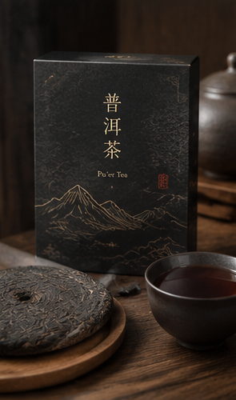
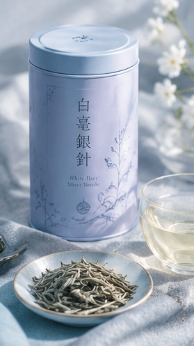
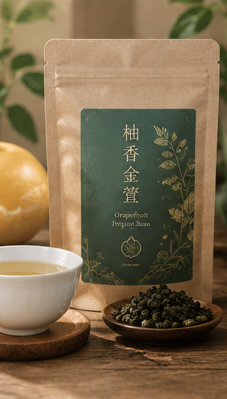
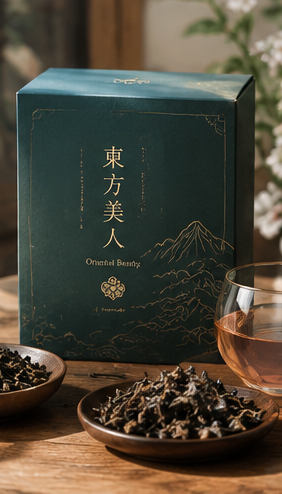
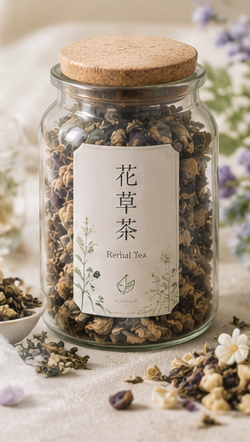

茶，不只是飲品，更是歲月沈澱後的對話。御茗閣專為重視生活品味的成年人而設，嚴格把關每一道烘焙與採摘工序。我們相信，一杯好茶能撫平繁雜思緒，在靜謐中找回內心的安定與力量。
十款職人手作經典，滿足您對極致茶香的追求

海拔千米以上雲霧孕育，茶湯金黃透亮，入口清香回甘，帶有高山冷韻。

傳統重焙火工藝，茶韻深厚沉穩，帶有獨特的果香與熟韻，耐泡不澀。

嚴選細緻綠茶揉合春日櫻花香氣，清雅爽口，帶有微甜的花香尾韻。

具備天然的肉桂香與淡淡薄荷尾韻，茶湯紅豔明亮，口感層次豐富飽滿。

以鮮嫩綠茶佐新鮮茉莉花辦反覆窨製，花香撲鼻，茶味溫潤清甜。

經歲月陳化，質地溫潤厚實，茶湯紅濃透亮，適合靜心細品的沉穩之選。

滿披白毫，芽頭肥壯。茶湯清淡毫香顯現，口感清鮮爽口，極具珍稀感。

金萱茶特有的奶香交織清雅柚子果香，口感溫順滑潤，層次別致獨特。

經小綠葉蟬親吻叮咬，散發獨特天然熟果香與蜜香，琥珀色茶湯甘甜溫醇。

無咖啡因草本配方，融合多種天然草本植栽，夜晚沉澱身心的最佳良伴。